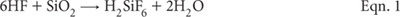

Information on the total concentration in soil of an element or a collection of elements has many applications. These include mass-balance studies, helping to ascertain pedological weathering processes, tracking the loading of contaminants, etc. Total elemental concentrations, however, are not guaranteed to reflect geological origin, except when little or no weathering has occurred (Thornton 1983). The deliberate addition of beneficial agricultural additives is also influential on the results. Table 17.1 provides examples of typical total soil concentrations of a range of elements. Methods for the total elemental analysis of C, N, P, and S are provided in Chapters 6, 7, 9, and 10, respectively. Alternative methods for total P and total S are included in this chapter.
Table 17.1. Tentative examples of worldwide ranges of total soil concentrations of elements, developed from Alloway (1990), Fergusson (1990), Giles (1959), Oertel and Giles (1959), Rayment and Hamilton (1997) and Thornton (1983). Mean values (in brackets) are from Thornton (1983).
Element |
Soil range |
Aluminium (% Al) |
1.0–30 (6.65) |
Arsenic (mg As/kg) |
0.1–194 (11.3) |
Cadmium (mg Cd/kg) |
<0.005–8.1 (0.62) |
Calcium (% Ca) |
0.01–32 (1.96) |
Chromium (mg Cr/kg) |
0.9–1500 (84) |
Cobalt (mg Co/kg) |
0.3–200 (12.0) |
Iron (% Fe) |
0.01–21 (3.2) |
Copper (mg Cu/kg) |
2–110 (25.8) |
Magnesium (% Mg) |
0.005–16 (0.83) |
Lead (mg Pb/kg) |
<1–890 (29.2) |
Manganese (mg Mn/kg) |
<1–18 300 (760) |
Molybdenum (mg Mo/kg) |
0.07–28 (1.92) |
Nickel (mg Ni/kg) |
0.1–1520 (33.7) |
Potassium (% K) |
0.005–7.9 (1.83) |
Silicon (% Si) |
28–41 (33) |
Sodium (% Na) |
0.005–10 (1.09) |
Strontium (mg Sr/kg) |
<3–3500 (278) |
Titanium (% Ti) |
<0.006–3.4 (0.051) |
Vanadium (mg V/kg) |
0.8–1000 (108) |
Zinc (mg Zn/kg) |
1.5–2000 (59.8) |
Decisions on the most appropriate method/s to use to quantify the total elemental concentration of soils are influenced by equipment and instrumentation available to the analyst. Choice of method is also influenced by whether or not elements that comprise the lattice of soil minerals need to be quantified, along with other forms of the same elements that exist on the surfaces of soil particles or within the soil matrix. For example, elements associated with recent anthropogenic soil contaminants and beneficial agricultural additives are likely to be easiest to extract. It follows that elemental analysis can yield true-totals or partial or pseudo-totals, depending on the choice of method. Highly influential are how the soils are digested and/or the choice of instrumentation (e.g. XRF, ICPAES, ICP-MS, GFAAS).
Specifically, two commonly used laboratory procedures for total elemental analysis of soils involve either XRF and acid digestions involving hydrofluoric acid (HF), followed by an appropriate analytical finish such as ICPAES, or ICP-MS for ultra-trace determinations (Radojevic and Baskin 1999; Baranowski et al. 2002). Only HF (with heating) will chemically decompose the silicate lattice of soils (see Eqn. 1 from Wu et al. 1996), with consequential release of companion elements. Other acid combinations without HF are less effective but are still useful for environmental applications involving contaminants from non-silicate sources (the great majority).

For Workplace Health and Safety reasons, the use of HF is not favoured when laboratory staff lack the necessary training and appropriate safety equipment. Extreme care must be taken if used, as HF is aggressive and highly toxic.
Aqua regia digestions involve a combination of concentrated nitric acid (HNO3) and hydrochloric acid (HCl), commonly in the v/v proportion of 1:3 (e.g. Andersen and Kisser 2004; Kisser 2005). Aqua regia is effective on most base metal sulfates, sulfides, oxides and carbonates but only ensures partial digestion for most rock-forming elements and elements of a refractory nature. According to Alloway (1995), aqua regia digests of soil will extract between 70% and 90% of the total content of the elements Cd, Co, Cr, Cu, Fe, Mn, Ni and Pb; 60–70% of Mg; 30–60% of Ca; 30–40% of Al, 10–20% of K; and as little as 2–5% Na. Generally these percentages are in agreement with those reported in Wageningen reports (WEPAL–ISE Soil Exchanges) on comparing medians of ‘so called totals’ vs ‘real totals’. The method of heating to promote digestion also slightly affects the results (Kisser 2005).
Of the laboratories reporting real totals for soils in Wageningen programs, ≈40% report the results of XRF concentrations in pressed powders, while about 10% report XRF concentrations in fused samples. The remaining 50% use acid digestions that include HF.
Contamination is an ever-present companion, particularly during soil grinding and subsequent laboratory procedures. Good laboratory hygiene and the use of equipment, apparatus and chemicals that do not measurably contaminate the sample is a sound defence. For example, commercial soil grinders can be sources of Cd, Cr, Fe, Ni, P and Zn contamination. Stainless steel can be a source of Cr Ni, Mo and Mn (Zief and Mitchell 1976), while tungsten carbide can release Fe (Whipple 1984) and other metals.
To avoid random scattering of fluorescent light or reflected light due to variable particulate sizes when using spectrometric techniques such as XRF, fine grinding of coarsely-ground soil samples (Buhrke 1998) provides an alternative to fusion. A particle size of <0.05 mm is commonly required, even though there is a risk of contamination. Fortunately, ring-mill or shatter-box grinders that use fused zirconia milling heads help to avoid metal contamination. Herein, a short (1–2 min) grind in a fused zirconia ring-mill is recommended prior to XRF analysis and for methods employing acid digestion, the latter to obtain a good representative sub-sample when weighing. Initially, the soil needs to be pulverised to provide a 10–30 g sub-sample for ring-mill grinding. A well maintained stainless steel mill is the best option for grinding soil to <2 mm.
Table 17.2. Summary details of method codes, method titles, technologies and notes for total elemental tests described in this chapter.
Code |
Technology |
Test method |
Notes |
17A1 |
X-ray fluorescence – dry powder pellets. |
True total elemental analysis of soils and sediments – X-ray fluorescence spectroscopy. |
High reliability but requires XRF instrumentation and expertise: excludes C, P, and S, described elsewhere. |
17A2 |
Microwave assisted digestion with HF (and with a H2O2 option) – ICPAES or GFAAS or ICP-MS analytical finish. |
Total elemental analysis of soils and sediments – microwave assisted digestion, with determination by atomic spectroscopy. |
High reliability but involves extremely hazardous chemicals and procedures. |
17B1 |
Reverse aqua regia block digestion – ICPAES or GFAAS or ICP-MS analytical finish. |
Pseudo-total elements of soils and sediments – reverse aqua regia block digestion, with determination by atomic spectroscopy. |
Pseudo-totals only but analytically safer than Method 17A2. Suits non-structural, non-silicate contaminants: excludes TOC and TSN. |
17B2 |
Reverse aqua regia microwave assisted digestion – ICPAES or GFAAS or ICP-MS analytical finish: approximates USEPA 3051A. |
Pseudo-total elements in soils and sediments – reverse aqua regia microwave assisted digestion of sludges, soils and sediments, with determination by atomic spectroscopy. |
|
17C1 |
Aqua regia block digestion – ICPAES or GFAAS or ICP-MS analytical finish. |
Pseudo-total elements of soils and sediments – conventional aqua regia block digestion. |
Pseudo-totals only but analytically safer than Method 17A2. Suits non-structural, non-silicate contaminants: excludes TOC and TSN. |
Methods used commonly on pre-dried mineral soils and sludges in Australasia for total elements and partial or pseudo totals are provided in this chapter. These cover XRF; microwave assisted digestion of an acid mixture, including HF; reverse aqua regia block digestion and atomic spectroscopy (ICPAES and GFAAS/ICP-MS); and microwave assisted centrifuge tube digestion of sludges, soils and sediments. Table 17.2 contains summary details.